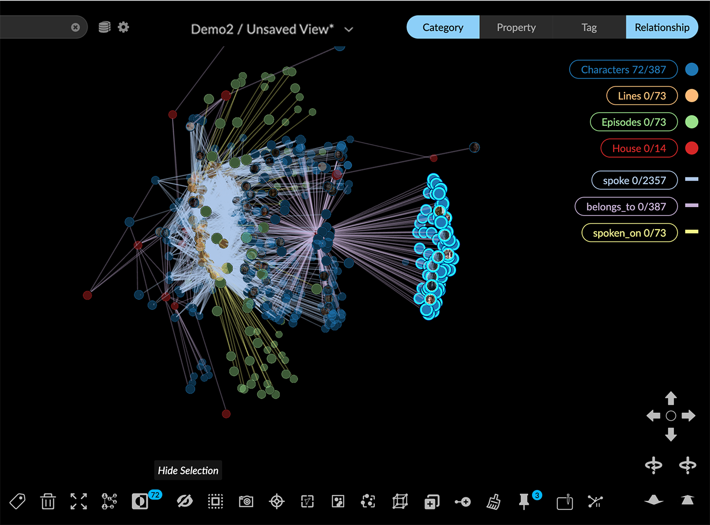
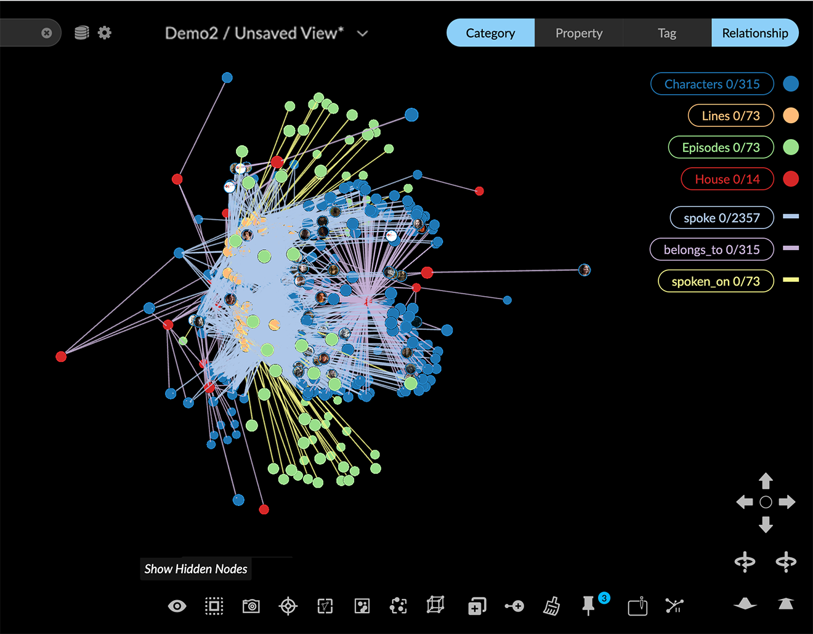
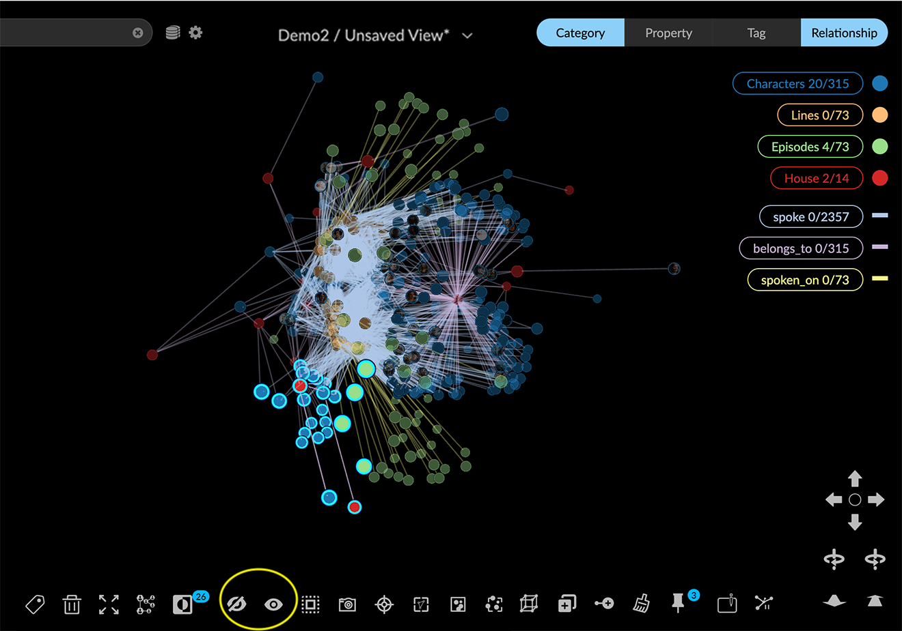
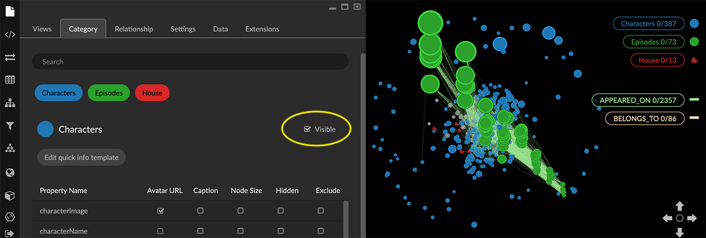
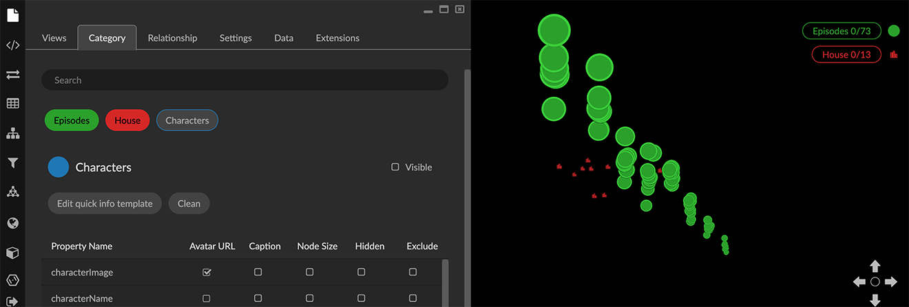
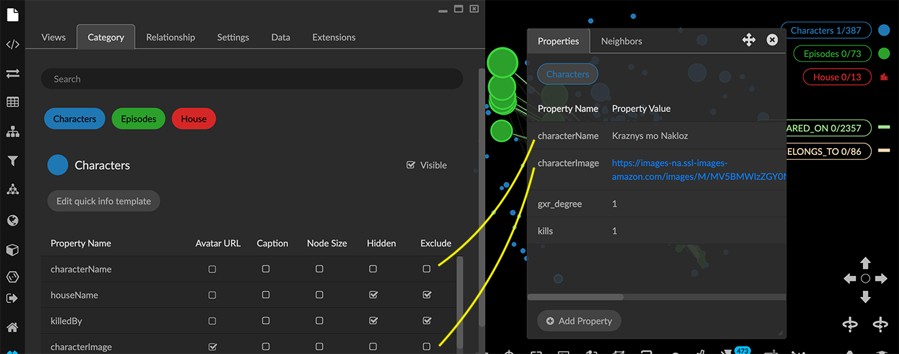

Hiding Data Hiding nodes temporarily can be useful for focusing on subsets of graph data that you may want to work with further, or clear from the graph. You can: Use Hide Selection to hide selected nodes temporarily, and Show hidden nodes to restore hidden nodes. Deselect the Visible checkbox for a category or relationship to temporarily hide nodes of a category or edges of a relationship. Select the Exclude checkbox for any property of a category or relationship to temporarily exclude it from the data. Using Hide Selection and Show Hidden Nodes The Hide selection and Show hidden nodes icons appear next to each other in the context menu. Hide Selection appears only when nodes are selected Once you hide nodes, the Show hidden nodes icon appears. Click it to restore all the hidden nodes and edges to the graph, update the total counts in the legend lists, and de-select the data. To hide nodes: Select nodes using any selection method.  Click Hide Selection icon in the toolbar or right-click menu. The selected nodes (and any connected edges) are hidden. Hidden nodes, edges, etc. are subtracted from the lists in the legend.  You can keep selecting and hiding nodes, which will be added to what’s already hidden. The Hide Selection icon appears only when one or more nodes are selected.  To restore hidden nodes: Click the Show hidden nodes icon in the context toolbar. All hidden nodes are restored, and the number of restored nodes and associated edges, as well as their properties and tags are added back to the lists in the legend. Using Leaf Trimming Leaf trimming (Ctrl + L) is a keyboard command which temporarily hides (or restores) nodes in a selection which are either unconnected or connected by only one edge. Ctrl+L is a toggle control. To use leaf trimming: Select nodes using any method. If no selection is made leaf trimming operates on all the data. Press Ctrl + L once to hide the trimmed nodes. The Show hidden nodes icon appears, if no other nodes had already been hidden. Press Ctrl +L again to restore the trimmed nodes. Collections now provides enhanced ways to group and work with nodes connected by a single relationship. Hiding data by Category or Relationship By default, nodes and edges in the graph are visible. You can hide all data for a category or relationship temporarily by clicking the Visible checkbox for an entity in the Category or Relationship tab of the Project panel. For a category, all its nodes as well as the connected edges disappear from the view, and both the category name and the name of its relationships disappear from the list in the legend. For a relationship, all its edges disappear from the graph space, and the relationship name disappears from the list in the legend. Nodes connected to the edges remain in the graph space. To hide data by Category or Relationship: Open the Project panel and Category (or Relationship) tab. Click a category or relationship label to select it. Un-check the Visible checkbox.  The nodes (or edges) for the selected category or relationship disappear from the graph space. To display data for the entity again, simply click its Visible checkbox.  Hiding or Excluding property data You can: Hide any property for a category or relationship temporarily by clicking its Hidden checkbox in the Category or Relationship tab of the Project panel. Hidden properties no longer appear in information panels or tables, but they are exported in CSV or Excel tables. Exclude any property temporarily by clicking its Exclude checkbox in the Category or Relationship tab of the Project panel. Excluded properties no longer appear in information panels or tables, AND they are not exported in CSV or Excel tables. To hide and/or exclude property of a category or relationship: Open the Project panel and Category (or Relationship) tab. Click a category or relationship label to select it. Locate one or more properties, and Click the Hidden checkbox to hide a property in information panels and tables. Click the Exclude checkbox to hide a property in information panels and tables, and to exclude it from CSV or Excel export. 